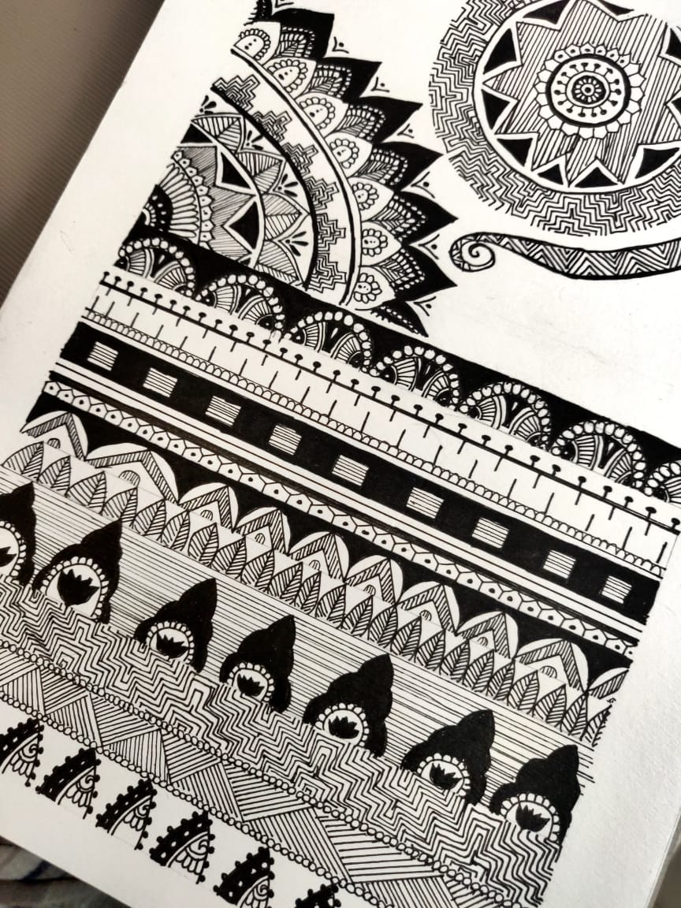

Hi, I am Shraddha Jain, a UX/UI Designer. I started my career working as a Recruitment Coordinator for a Multinational Company. I got promoted to a recruiter in a very short period of serving 6 months. I was tasked to manage the end-to-end recruitment process. I believe recruitment is heavy on psychology. Further pursuing my master's and undergraduate studies in the domain of human resources has given me an edge in understanding people and their psychology. Growing up I’ve always been creative. I love playing with colors and colors inspire me to dream big. Ever since my formative years, I’ve been strongly influenced by the interrogative technique of ‘5-Whys’. This intrigue led me to constantly question why something is built a certain way. With my psychological background, I started to perceive the applications by wearing different people’s shoes. This is how I started off in the design field. It was the amalgamation of fields that I’m very strong in creativity psychology and communication.
My feet taps to the sound of music. I love to design, paint, dance and sing (trying to fake adele is my all time favorite). Participating in creative projects is one of my fav things to do.
